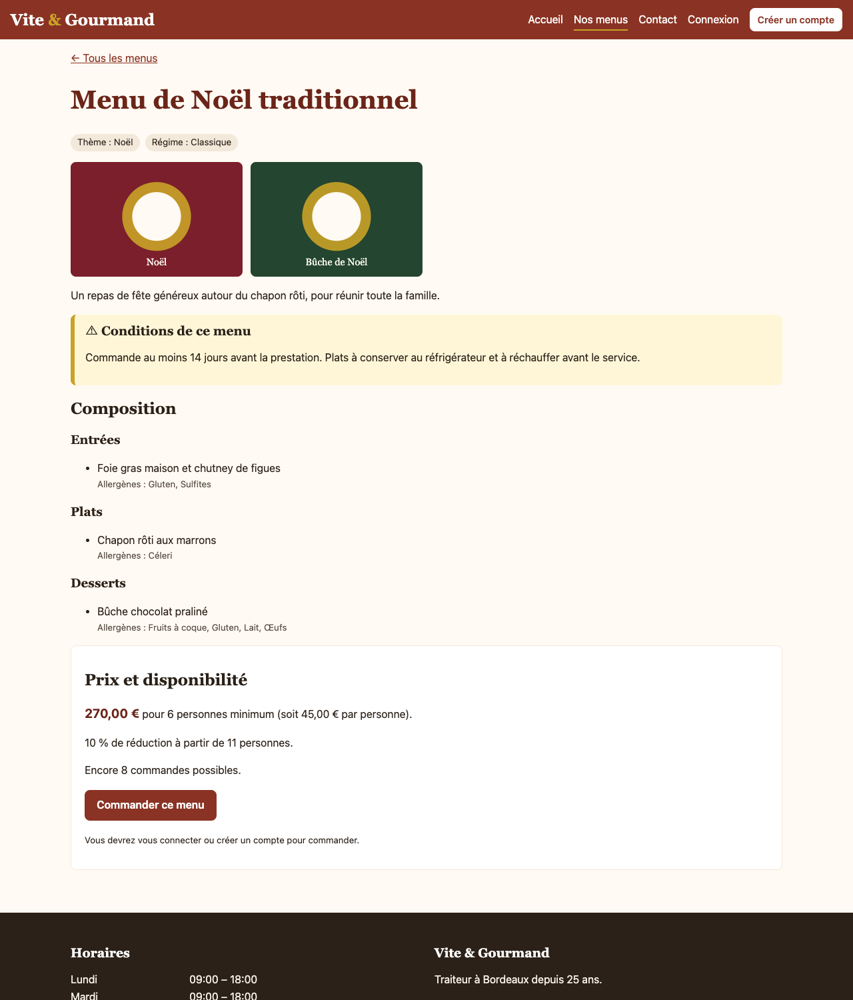
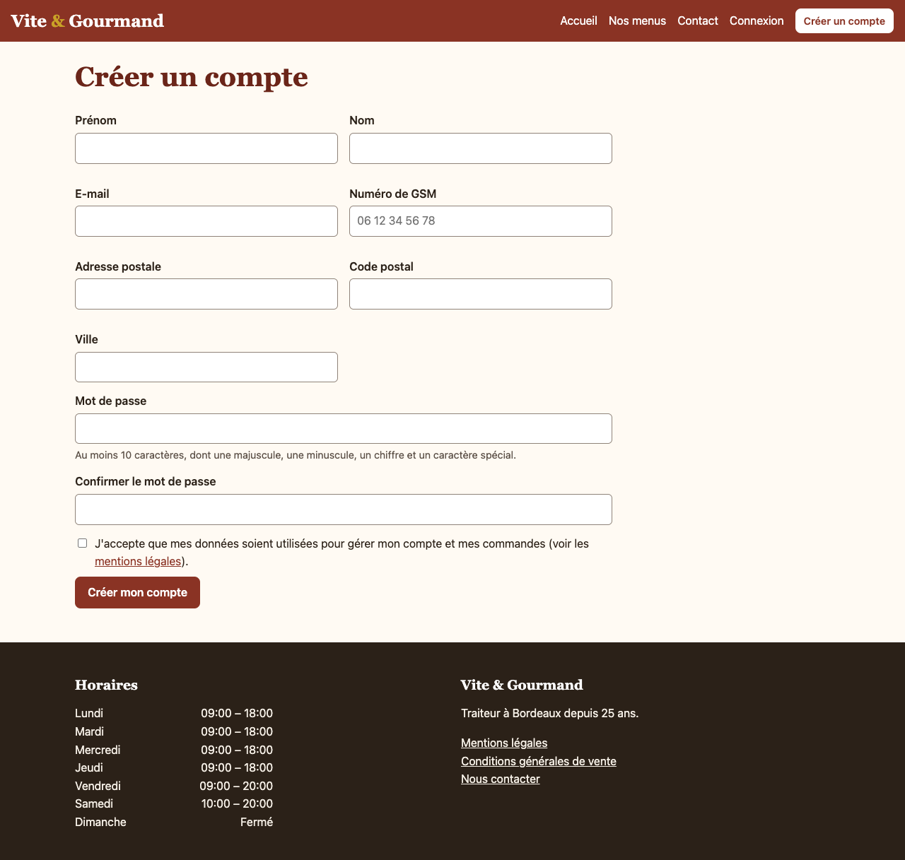
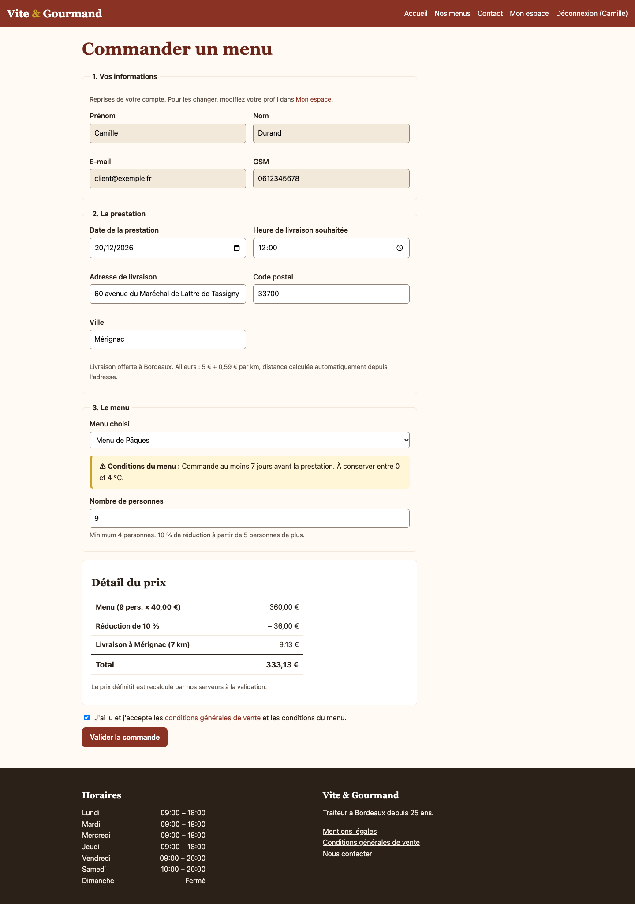
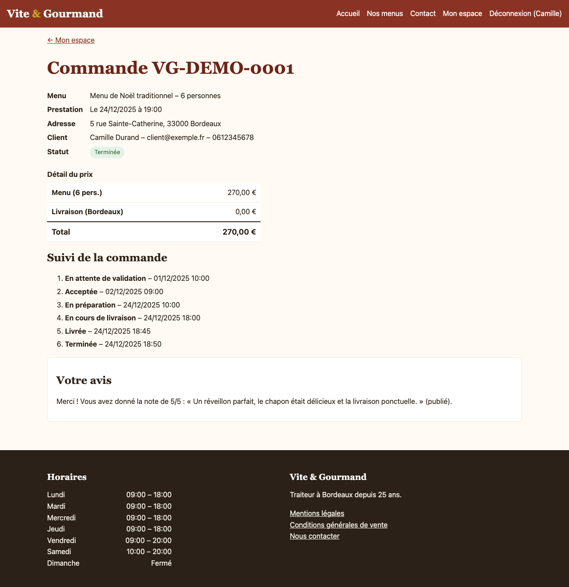
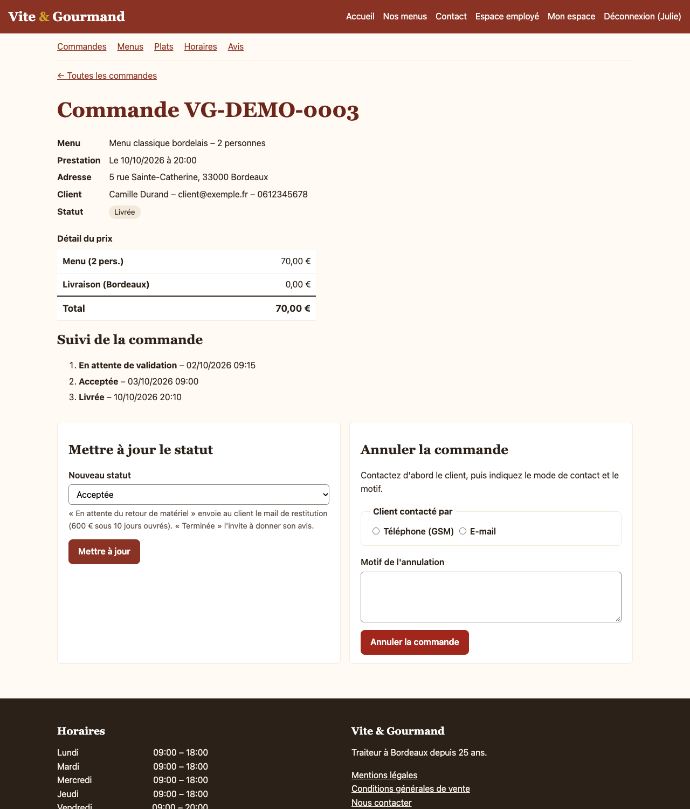
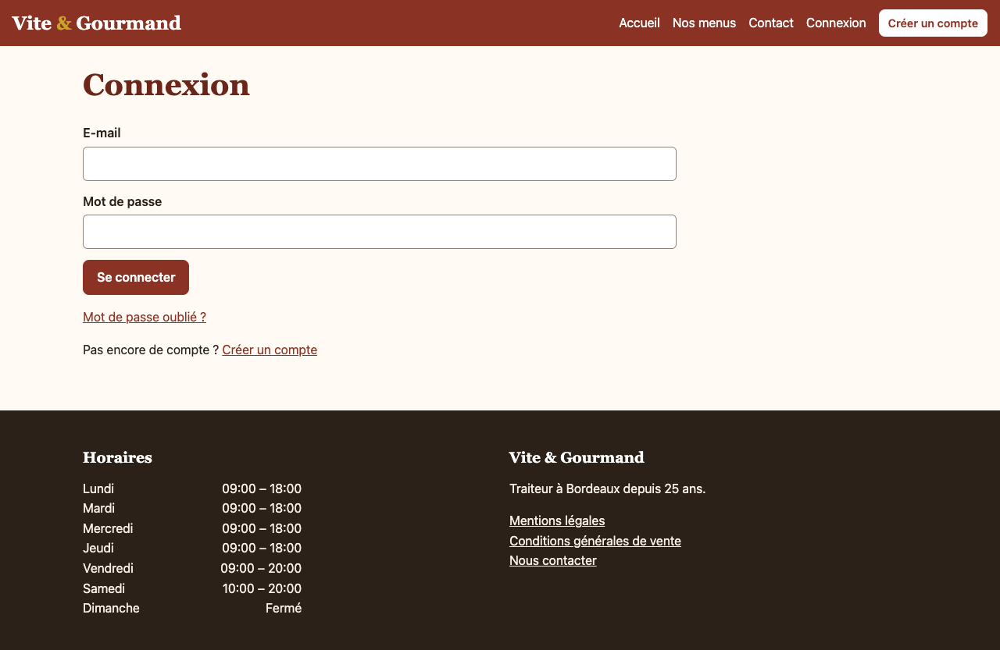
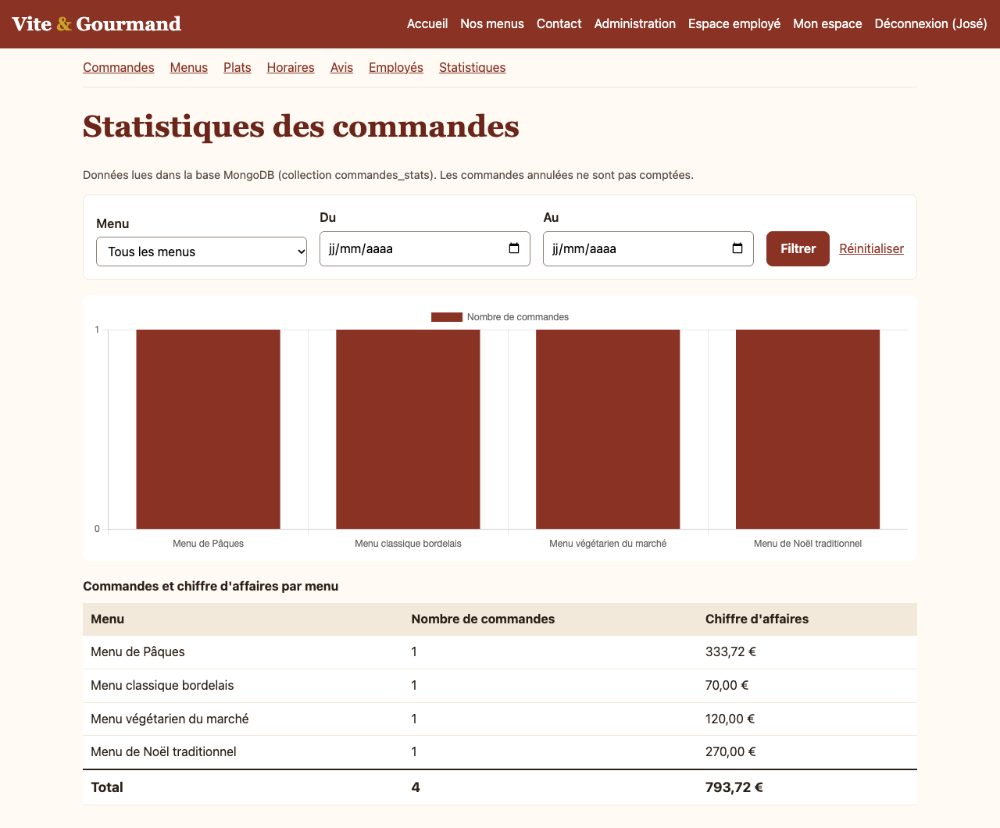

Hébergement gratuit : si le site n'a pas été visité depuis 15 minutes, la première page peut mettre environ une minute à s'afficher.
2. Identifiants de test
Rôle
E-mail (identifiant)
Mot de passe
Administrateur (José)
jose@vite-gourmand.fr
Jose#Admin2026
Employée (Julie)
julie@vite-gourmand.fr
Julie#Employe2026
Utilisateur (Camille Durand)
client@exemple.fr
Client#Test2026
Vous pouvez aussi créer votre propre compte utilisateur depuis « Créer un compte ».
Données de démonstration : 6 menus (Noël, Pâques, classique, végétarien, vegan, buffet événement) et 4 commandes du client Camille Durand
(2 terminées avec un avis, 1 livrée, 1 en attente de validation).
3. Parcours visiteur
Consulter les menus
Cliquez sur Nos menus.
Utilisez les filtres (prix minimum et maximum, thème, régime, nombre de convives) : la liste se met à jour automatiquement, sans recharger la page.
Cliquez sur Voir le détail : composition par entrées, plats et desserts, allergènes de chaque plat, prix, stock restant
et conditions du menu (encadré jaune).

Détail d'un menu
Contacter l'entreprise
Page Contact : saisissez un titre, votre message et votre e-mail, puis Envoyer. Le message est transmis par e-mail à l'entreprise.
4. Parcours utilisateur
Créer un compte et se connecter
Créer un compte : nom, prénom, GSM, e-mail, adresse postale et mot de passe
(au moins 10 caractères avec une majuscule, une minuscule, un chiffre et un caractère spécial). Un e-mail de bienvenue est envoyé.
Connexion : e-mail et mot de passe. En cas d'oubli, « Mot de passe oublié ? » envoie un lien valable une heure.

Création de compte
Commander un menu
Depuis le détail d'un menu, cliquez sur Commander ce menu (si vous n'êtes pas connecté, l'application vous demande de vous connecter puis vous ramène à la commande).
Vos nom, prénom, e-mail et GSM sont repris de votre compte.
Indiquez la date, l'heure de livraison et l'adresse. Le menu choisi est déjà sélectionné ; ses conditions sont rappelées.
Indiquez le nombre de personnes (au moins le minimum du menu). Le détail du prix s'affiche : prix du menu, réduction de 10 %
à partir de 5 personnes de plus que le minimum, livraison (offerte à Bordeaux, sinon 5 € + 0,59 € par kilomètre, distance calculée automatiquement).
Acceptez les CGV et cliquez sur Valider la commande. Un e-mail de confirmation est envoyé.
Exemple de test : Menu de Pâques, 9 personnes, au 60 avenue du Maréchal de Lattre de Tassigny, 33700 Mérignac.
Lors du test local, l'application a calculé 360,00 € − 36,00 € + 9,13 € de livraison (7 km) = 333,13 €.

Formulaire de commande avec le détail du prix
Suivre et gérer ses commandes
Mon espace liste vos commandes et permet de modifier vos informations personnelles.
Commande en attente : vous pouvez la modifier (tout sauf le menu) ou l'annuler.
Commande acceptée : la modification et l'annulation ne sont plus possibles ; le suivi affiche chaque étape avec sa date et son heure.
Commande terminée : un e-mail vous invite à donner votre avis (note de 1 à 5 et commentaire), publié après validation par l'équipe.

Commande terminée : suivi et avis
À tester avec le compte client : commande VG-DEMO-0004 (en attente, modifiable) et VG-DEMO-0003 (livrée, suivi visible).
5. Parcours employé
Connectez-vous avec le compte de Julie. Le lien Espace employé donne accès à : Commandes, Menus, Plats, Horaires, Avis.
Traiter les commandes
Filtrez les commandes par statut ou par client (nom ou e-mail).
Cliquez sur Gérer puis choisissez le nouveau statut : acceptée, en préparation, en cours de livraison, livrée,
en attente du retour de matériel (le client reçoit un e-mail : 600 € de frais si le matériel n'est pas rendu sous 10 jours ouvrés), terminée (le client est invité à donner son avis).
Pour annuler, contactez d'abord le client, puis indiquez le mode de contact (téléphone ou e-mail) et le motif.

Gestion d'une commande
Menus, plats, horaires et avis
Menus : ajouter, modifier ou supprimer un menu (titre, description, thème, régime, minimum de personnes, prix, conditions, stock, plats, images).
Un menu déjà commandé ne peut pas être supprimé : mettez son stock à 0.
Plats : nom, type (entrée, plat, dessert) et allergènes.
Horaires : heures d'ouverture et de fermeture de chaque jour, ou « Fermé ». Elles s'affichent dans le pied de page.
Avis : Valider (l'avis apparaît sur l'accueil) ou Refuser.
6. Parcours administrateur
Connectez-vous avec le compte de José. L'administrateur a accès à tout l'espace employé, ainsi qu'à :
Employés : créer un compte employé (prénom, nom, e-mail, mot de passe). L'employé reçoit un e-mail sans son mot de passe :
l'administrateur le lui communique en direct. Désactiver un compte le déconnecte immédiatement et bloque toute nouvelle connexion.
Il n'est pas possible de créer un administrateur depuis l'application.
Statistiques : graphique du nombre de commandes par menu et tableau du chiffre d'affaires, filtrables par menu et par période.
Ces données proviennent de la base MongoDB ; les commandes annulées ne sont pas comptées.

Gestion des comptes employés

Statistiques lues dans MongoDB (capture du site en production, données de démonstration)